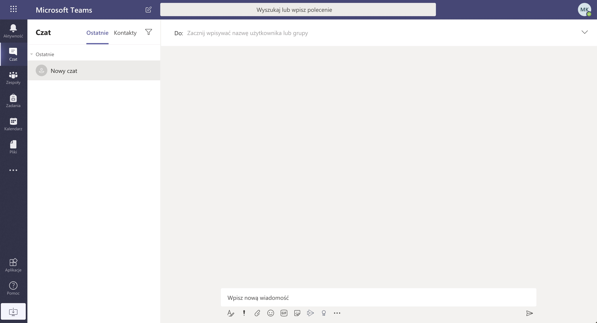
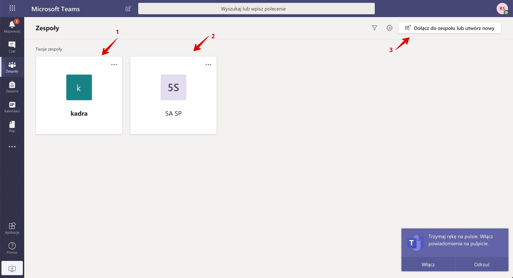

Instrukcja dla nauczyciela
Poniższa instrukcja została przygotowana w celu ułatwienia rozpoczęcia pracy z narzędziamy do e-nauczania.
Postępuj zgodnie z poniższą instrukcją, a w razie pytań skorzystaj z możliwości kontaktu z osobą wdrażającą system. (ostatnia strona)
Instrukcja krok po kroku
- Wejdź na stronę https://teams.microsoft.com
- Zaloguj się na swoje konto korzystając z wcześniej przesłanych danych.
-
Po zalogowaniu zobaczysz poniższy ekran. Zachęcamy do instalacji sugerowanej aplikacji lub użycie najnowszych przeglądarek:
- Chrome - https://bit.ly/sciagnij-chrome
- Microsoft Edge - https://bit.ly/sciagnij-edge
-
Po wejściu do systemu widzimy, poniższy ekran. Kliknij na zakładkę Zespoły po lewej stronie
 -
Po wejściu do zakładki Zespoły, zobaczysz poniższy ekran:
Opis domyślnych zespołów
- kadra - jest to kanał i dedykowane miejsce tylko dla nauczycieli i pracowników. Uczniowie nie widzą tego kanału oraz nie mogą do niego dołączyć.
-
Domyślne zespoły:
0A SP, 1A SP, 2A SP, 3A SP
4A SP, 5A SP, 6A SP, 7A SP, 8A SP
Są to zespoły klasowe, stworzone automatycznie po synchronizacji z Librusem.
!!! Tutaj nie wrzucamy żadnych materiałów przedmiotowych. Kanał ten może być wykorzystany przez nauczycieli do ogłoszeń ogólnych, poza przedmiotowych.
-
Akcje tworzenia zespołów - WAŻNE
To przy użyciu tej funkcji każdy z nauczycieli będzie tworzył zespoły dla swoich uczniów.
Aby zachować porządek oraz uniknąć problemów z dostępami do kanałów danej klasy poniżej udostępniona jest szczegółowa instrukcja jak utworzyć zespół.
- Przejdź do sekcji: Instrukcja zakładania zespołów